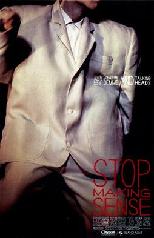

Jonathan Demme
1984
88 minutes
TITLE: Stop Making Sense TEXT PLACEHOLDER 235
This is of course the famous Talking Heads music documentary. It's directed by the same guy who did Silence of the Lambs, so of course a sense of dread permeates the whole thing as you wait to find out who the Psycho Killer is. (Spoiler: it's David Byrne.)
Hate to break it to you, but you were a weird kid with a weird upbringing. So oddballs like David Byrne and Peter Gabriel and Elvis Costello had their weirdness a bit wasted on you as a kid. They seemed a bit odd, sure, but nothing about their behavior or appearance seemed like it was intended to be especially unusual compared against your general background noise. If anything these guys seemed a little bit square to you in their videos. David Byrne was a little bit sweaty and wore somewhat ill-fitting suits. Elvis Costello was just a nerdy guy with glasses who didn't look much stranger than some of the dudes on the Lawrence Welk shows your grandmother liked to watch, which you didn't necessarily realize were reruns not being broadcast live. Even Elton John seemed just a bit colorful in most of his appearances. In order for you to think someone was weird, they had to be going full Boy George or Cyndi Lauper or RuPaul in their appearance. You certainly weren't about to judge their choreography. And there weren't many people you knew in real life that you trusted to be doing anything particularly normal.
This will be another coffee shop watch for you. Your earbuds are pretty good but they aren't completely noise-canceling. The coffee shop you watch this in tends to play a lot of Talking Heads tracks on their Spotify, so a minute or two into "Life During Wartime" you will hear "Life During Wartime" come on the speakers in the shop, for a truly confusing and unsettling experience. You'll just have to pause and hope the next song is something completely different so you're not feeling too out-of-sync with the world.
Time to choose something different: